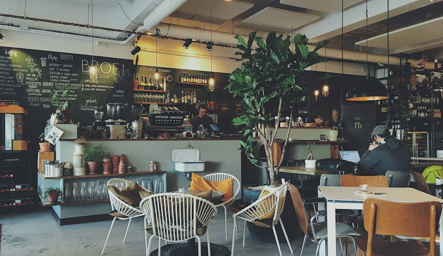
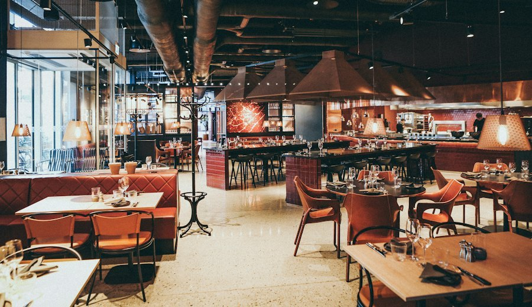
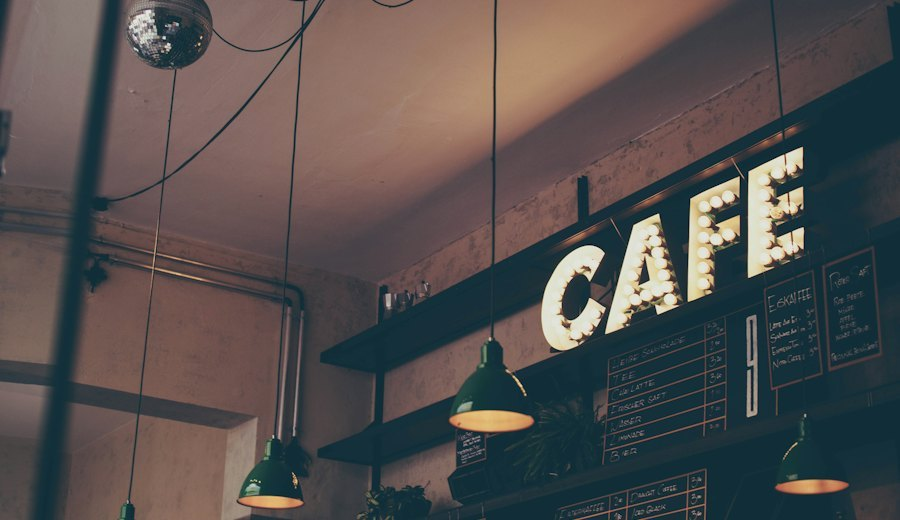

Еда готова ровно
к вашей минуте
Сервис предзаказа: гость выбирает блюда и точное время получения,
кухня готовит к этому времени, а не к моменту, когда гость встал в очередь.
Работающий MVP в облаке
3 заведения в демо
365 автотестов
20 → 2
минуты ожидания: было и цель кейса
5 сек
через столько гость видит статус кухни
30
маршрутов API в сервисе
Проблема
Обед длится час, а еда съедает половину
Гость тратит время дважды, кухня работает вслепую.
В час пик пропускная способность упирается в очередь, а не в плиту.
Куда уходит обеденный час60 минут перерыва
8 мин — очередь на кассу
12 мин — ожидание заказа
40 мин — еда и отдых
Двадцать минут — треть перерыва. Их забирает процесс,
а не еда: очередь и ожидание.
Пришёл
→
Очередь
→
Ожидание
→
Забрал
20 мин
теряет гость в час пик
- кухня не знает, сколько гостей придёт и к какому времени
- готовить впрок — терять в качестве
- расширять зал и кухню ради пика невыгодно
Что теряет гость
Обеденный перерыв один и он короткий. Половина уходит на очередь
и ожидание, а не на еду и отдых.
Что теряет заведение
Пик упирается в кассу и зал: кухня могла бы приготовить больше,
но люди стоят в очереди, а не заказывают.
Решение
Заказ к минуте,
а не «когда-нибудь»
- Гость открывает сайт заведения по QR со стола — приложение не нужно
- Выбирает блюда и точную минуту получения
- Система знает вместимость кухни на каждую минуту
и продаёт только выполнимые слоты
- Гость приходит — заказ уже готов и ждёт на полке
Сегодня
Пришёл → очередь 8 мин → заказ → ожидание 12 мин → забрал.
Итог: 20 минут и треть перерыва.
С ThreeFast
QR → выбрал блюда и минуту → кухня готовит к ней → пришёл и забрал.
Итог: ожидание у полки — меньше двух минут.
Целевая аудитория
Пользу получают обе стороны
Гость
Тот, у кого перерыв ровно час
- офисные сотрудники бизнес-центров и деловых районов
- те, кто заказывает навынос и ест у себя
- не ставит приложение ради одного заказа
- ценит предсказуемость: пришёл — забрал
Заведение
Точка с самовывозом и очередью в пик
- кофейни, кафе, фудкорты, кулинария
- в пик очередь, но расширять зал и кухню невыгодно
- нужен предсказуемый поток, а не аврал
- нет своей кассы с онлайн-заказом и не хочется внедрять
Три роли закрывают весь цикл: гость заказывает,
точка управляет собой, сервис подключает новые заведения.

Кафе CentralДомашняя кухня · 9 блюд

Green BowlЗдоровая еда · 5 блюд

Кофе и выпечкаКофейня · 4 блюда
Каждая точка — со своими правилами
Часы работы, шаг слотов, вместимость кухни и меню
настраивает сама точка. Сервис только поставляет инструмент.
Продукт · путь гостя
Три шага, без регистрации
1. МенюФото, цена и время приготовления
2. МинутаТолько выполнимые слоты: занятые недоступны
3. ОформлениеИмя, телефон, столик — и всё
Без регистрации и пароля
Корзина живёт в браузере
Сайт ставится на телефон как приложение
Продукт · панель кухни
Смена видит очередь, а не список
- Очередь по минутам с отсчётом до выдачи — видно, что готовить первым
- Столик прямо в талоне: заказ несут гостю, а не выкликивают номер
- Новый заказ со звуком — смена стоит у плиты, а не смотрит в экран
- Статус меняется одним нажатием: принят → готовится → готов → выдан
- Смена видит только своё заведение: чужое меню не поправить
Каждый талон окрашен тем же тоном, что и экран гостя:
акцент — принят, янтарь — в работе, зелёный — готов. Тон задаётся одним
свойством модели, поэтому новый статус не требует правок в вёрстке.
Продукт · выдача
Навёл камеру — заказ открылся
Гость показывает QR-код заказа со телефона,
кассир наводит камеру: состав, столик и сумма уже на экране.
СканерКамера, фото QR или номер вручную
Карточка заказаСтолик, состав и кнопка «Выдать заказ»
Читает коды и в Chrome, и в Safari; если камера недоступна —
распознаёт фотографию или принимает номер руками. Выдача — одно нажатие вместо поиска в списке.
Продукт · гость следит за заказом
Статус приходит с кухни сам
ПринятГалочка и номер заказа
ГотовитсяШкала двигается без перезагрузки
ОтменёнКрестик, состав и «Заказать заново»
Статус сам, каждые 5 секунд
Пока заказ в работе, страница обновляется сама
Тишина, когда не нужно
Опрос прекращается на выдаче и в скрытой вкладке
Один экран отмены
И у гостя, и у кухни — рисует сервер
Ссылка работает без входа
Заказ можно переслать — откроется у любого
Продукт · роли и управление
Три роли — от смены до сети заведений
Администратор точкиМеню, часы, вместимость кухни и аналитика
Администратор сервисаЗаводит точки и выдаёт им доступ
QR-плакатЛюбое заведение, любой столик
Ожидание выдачи: цель ≤ 2 минут
Считается от назначенной минуты до фактической
выдачи, а не от момента заказа
Рост пропускной способности: ≥ 25 %
Сравнение с эталоном «до внедрения», который
администратор вводит сам
Мощность кухни — в заказах в час
Шаг слотов и вместимость видны как понятная
цифра, а не как настройка
Печать плаката — часть продукта: метка стола в ссылке
подставляет гостю номер столика при оформлении, и кухня сразу знает, куда нести заказ.
Конкуренты и преимущества
Мы решаем не доставку, а самовывоз к минуте
| Агрегаторы доставки | Кассовые системы | ThreeFast |
|---|
| Задача | привезти курьером | учёт, касса, склад | забрать самому к минуте |
| Деньги с заведения | комиссия с каждого заказа | внедрение и оплата за рабочее место | подписка, комиссии нет |
| Запуск | подключение к платформе | интеграция с кассой | полчаса, без кассы |
| Гостю | нужно приложение | нужно приложение | сайт по QR, без установки |
| Время получения | как получится | не управляет | выбирает гость, минута в минуту |
| Данные о гостях | остаются у платформы | у заведения | у заведения |
| Что нужно заведению | договор с платформой | касса и внедрение | браузер и распечатанный QR |
Вместимость кухни на каждую минуту
Скидка вне часов пик
Выдача по QR за одно нажатие
Работает без интеграций
Комиссия с каждого заказа
Растёт вместе с оборотом: чем успешнее точка,
тем больше она отдаёт посреднику.
Подписка 20 000 ₸ в месяц
От числа заказов не зависит: чем больше точка
работает, тем выгоднее ей сервис.
Экономика · расходы
Сколько стоит сделать и запустить
| Разработка MVP | ≈ 500 часов · 17 000 строк кода и 8 000 строк тестов |
| Живые деньги на разработку | 0 — работа команды |
| Инфраструктура на старте | 0 — бесплатный тариф облака |
| Боевой режим | $15–20 в месяц: сервер и база, плюс домен |
| Подключение заведения | ≈ 30 минут: меню, часы, вместимость, печать QR |
| Интеграция с кассой | не требуется |
Почему так дешево
Проект не зависит от внешних платных сервисов:
QR рисуется в браузере, сканер работает на своём коде, статика отдаётся самим приложением.
Нет ни подписки на генератор кодов, ни CDN, ни платёжного шлюза.
Себестоимость одной точки падает
Сервер один на всех заведений: при сети
из 30 точек инфраструктура — меньше 1 000 ₸ на точку в месяц.
Оценка по факту разработки и текущим тарифам хостинга.
Это то, что уже написано и работает: не прототип на слайдах,
а развёрнутый сервис, который можно открыть с телефона.
Экономика · модель дохода
Подписка за точку вместо процента с заказов
20 000 ₸
подписка заведения в месяц, комиссии нет
2 500 ₸
средний чек в демо-меню
< 1
заказа в день стоит подписка
< 1 000 ₸
себестоимость точки при сети в 30 заведений
Точке достаточно одного заказа в день
Столько стоит подписка. Всё, что сервис приносит сверх
этого — маржа заведения: возвращённые гости, ровная загрузка кухни, разгруженная касса.
Дальше — рядом с подпиской
- процент с онлайн-оплаты, когда подключим эквайринг
- тарифы для сетей: несколько точек одним договором
Подписка × число точек
модель при тарифе 20 000 ₸, без комиссии с заказов
200 000 ₸10 точек
600 000 ₸30 точек
2 000 000 ₸100 точек
Масштабируемость
От одной точки до международного рынка
Сейчас
Алматы и Астана
Сервис развёрнут: три демо-точки, часовой пояс Алматы, живые заказы
Шаг 1
Города Казахстана
Подключение точек по стране: язык и валюта уже те же, менять нечего
Шаг 2
СНГ
Похожий формат самовывоза: нужны локализация и местные платёжные провайдеры
Шаг 3
Любой рынок
Формат «кафе плюс обеденный перерыв» есть везде: нужна партнёрская сеть
Что уже готово к росту
- Заведения изолированы: своё меню, слоты, вместимость, аккаунты
- Новая точка — операция в интерфейсе, без правок кода и деплоя
- PostgreSQL, миграции и догон схемы при старте
Что добавим для выхода за пределы страны
- локализация интерфейса: сейчас только русский язык
- мультивалютность и локальные платёжные провайдеры
- фоновые задачи в отдельный воркер, когда точек станет много
Страна и часовой пояс — параметр конфигурации, а не правка кода:
сервис уже развёрнут с часовым поясом Алматы, а новая точка заводится за полчаса.
Не заставлять человека
ждать еду
А подготовить её к моменту, когда он придёт.
ThreeFast
threefast.onrender.com
Спасибо за внимание. Готовы ответить на вопросы.
Наведите камеру — откроется живой сервис
Попробовать за 30 секунд
1 · наведите камеру на QR
→
2 · выберите блюда и минуту
→
3 · назовите код на выдаче
без регистрации